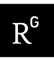
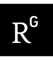

Since March 2020, Marc Hellmuth works as a lecturer (research-track) at the School of Computing (University of Leeds). Before joining the University of Leeds he was a Junior Professor for Biomathematics and Computer Science at University of Greifswald, Germany (2015-2020). Additionally, he obtained the Venia Legendi (habilitation) in Bioinformatics at the Saarland University (2016). He was postdoctoral researcher at the Saarland University (2011-2015), the Max-Planck-Institute for Computer Science (2011), the University of Leipzig and the Max-Planck-Institute for Mathematics in the Sciences (2010-2011). He obtained his PhD (2007-2010) from University of Leipzig (graded: summa cum laude).
He had frequently worked abroad as visiting researcher (incl. University of Leoben, Austria; Vienna University of Economics and Business, Austria; University of Southern Denmark; Université de Montréal, Canada; PICB, Shanghai and Nankai University, Tianjin, China; University of Ljubljana, Slovenia).
His research topics include Discrete Mathematics (Combinatorics, Optimization and (Hyper)Graph Theory); Algorithm Design and Complexity Theory; Mathematical and Computational Biology.
See also:
 
